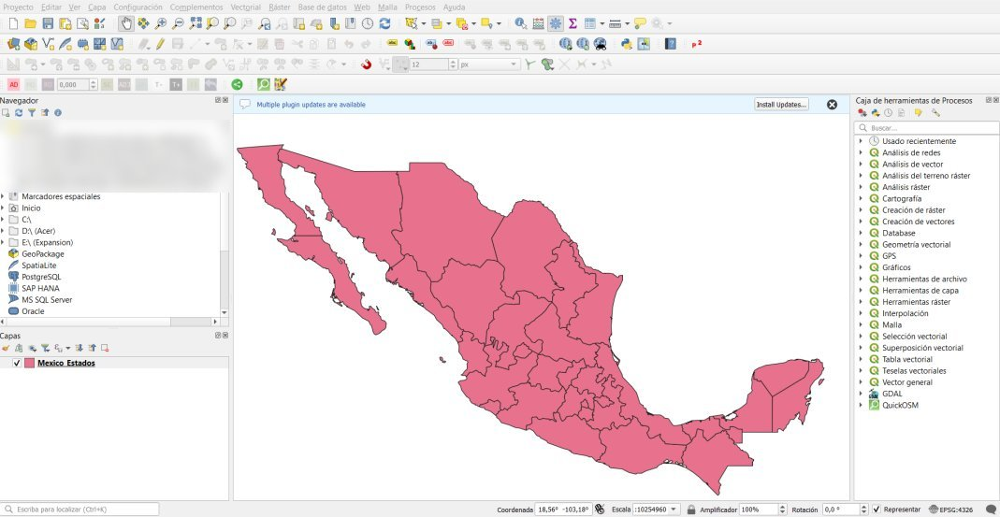
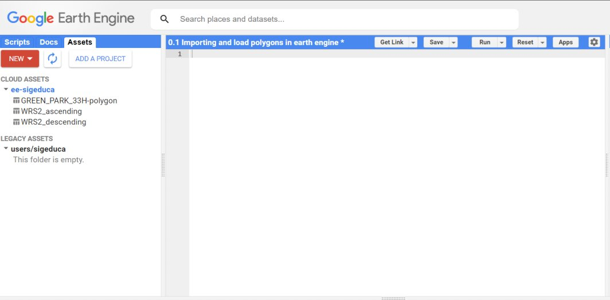
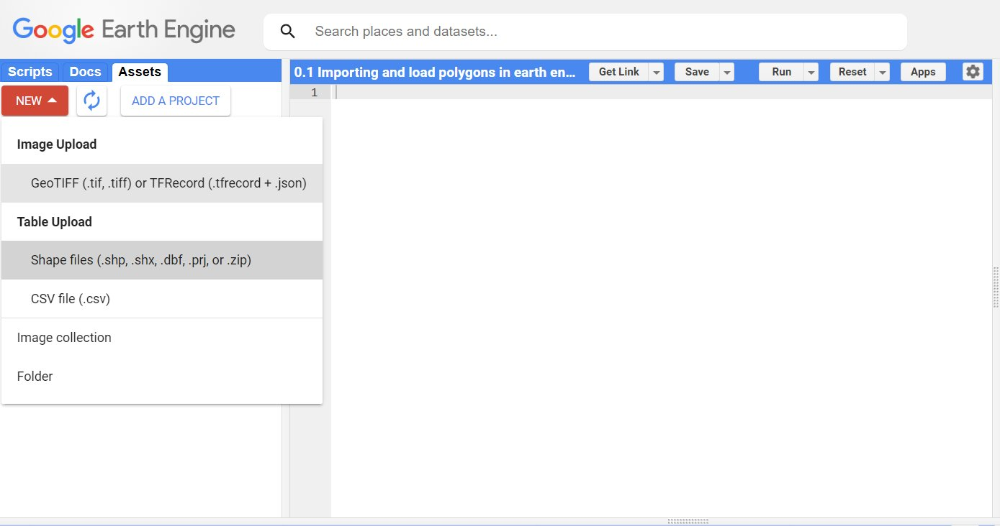
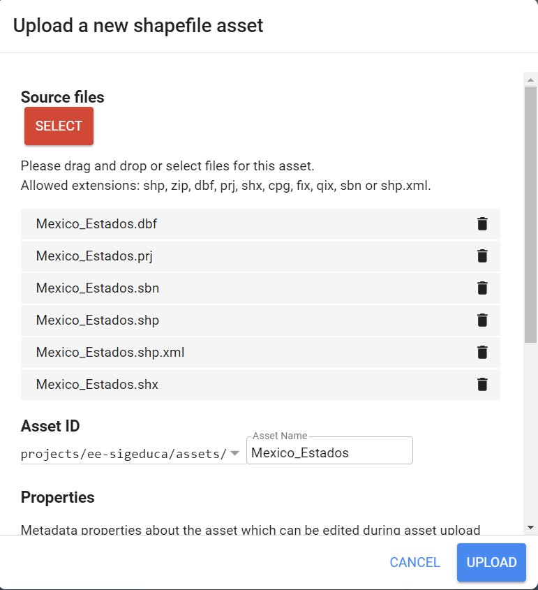
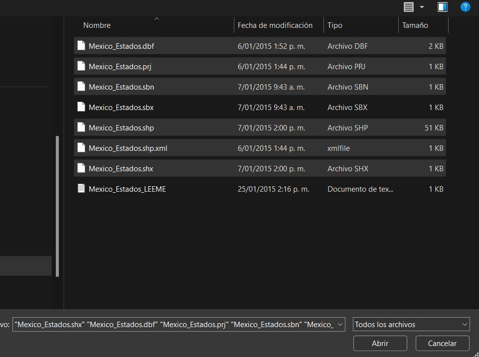
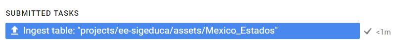
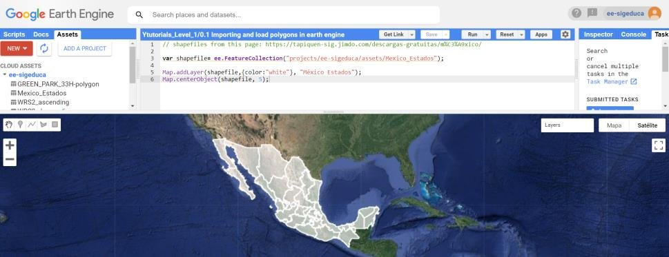

Importar shapefile en Google Earth Engine
Aprende en pocos minutos a subir un shapefile a tus assets y visualizarlo en el mapa de Google Earth Engine.
Introducción #
Google Earth Engine (GEE) permite cargar, analizar y visualizar muchos tipos de datos geoespaciales, incluidos los Shapefile, el formato estándar para datos vectoriales. En esta guía importarás un Shapefile llamado “Mexico_Estados” en Google Earth Engine y lo visualizarás en el mapa.
Objetivo #
Importar un archivo Shapefile en Google Earth Engine y visualizar los datos importados.
Para seguir esta guía necesitas tener Earth Engine activo. Si aún no lo tienes, empieza por el tutorial Creación y registro en Earth Engine.
Datos #
| Shapefile | Mexico_Estados |
|---|---|
| Descripción | Límites administrativos de los estados de México |
| Fuente | Tapiquén SIG · descargas gratuitas |
¿Qué es un shapefile? #
El shapefile es el formato vectorial más usado en SIG. Fue creado por Esri y guarda entidades geográficas (puntos, líneas o polígonos) junto con sus atributos. Aunque se le llama "un archivo", en realidad es un conjunto de archivos con el mismo nombre y distinta extensión:
| Extensión | Contenido |
|---|---|
| .shp | La geometría de cada entidad. |
| .shx | El índice que conecta la geometría con sus atributos. |
| .dbf | La tabla de atributos. |
| .prj | El sistema de coordenadas. Earth Engine lo necesita para ubicar bien los datos. |
| .sbn, .sbx, .shp.xml | Índices espaciales y metadatos opcionales. |
Al subirlo a Earth Engine, el shapefile se convierte en un asset de tipo tabla y se carga en los scripts como una FeatureCollection, es decir, una colección de entidades con geometría y atributos.
También puedes subir todos los archivos comprimidos en un solo .zip. Los archivos deben tener el mismo nombre, y ese nombre no debe tener tildes, espacios ni caracteres especiales.
Paso 1: Prepara los archivos #
Ve a la carpeta donde está tu shapefile. Solo necesitas subir los archivos con extensión .dbf, .prj, .sbn, .shp, .shp.xml y .shx.

Paso 2: Abre el Code Editor #
Ingresa a code.earthengine.google.com para acceder a la interfaz de Google Earth Engine.

Paso 3 y 4: Crea un asset de tipo Shape files #
Haz clic en la pestaña Assets del panel izquierdo. Luego selecciona NEW y elige Shape files.

Paso 5: Selecciona los archivos #
Haz clic en SELECT y elige los archivos del shapefile. En Asset ID queda el nombre, por ejemplo Mexico_Estados.

Paso 6: Sube el shapefile #
Haz clic en UPLOAD y espera a que cargue. En la pestaña Tasks verás la tarea; cuando termine aparece con un visto ✓.


Paso 7: Carga el shapefile en el mapa #
Pega este código en el Code Editor y presiona Run.
// Cargar el Shapefile importado var shapefile = ee.FeatureCollection("projects/ee-sigeduca/assets/Mexico_Estados"); // Visualizar y centrar el Shapefile importado Map.addLayer(shapefile, {color: "white"}, "México Estados"); Map.centerObject(shapefile, 5);
Cambia la ruta del asset. projects/ee-sigeduca/assets/Mexico_Estados es el asset de SIG EDUCA. Para usar la tuya, abre la pestaña Assets, haz clic en tu shapefile y copia el Table ID.

Conclusión #
Con esta guía aprendiste a importar archivos Shapefile en Google Earth Engine y a visualizarlos en el mapa interactivo. Esto te permitirá explorar y analizar tus propios datos vectoriales en la plataforma.